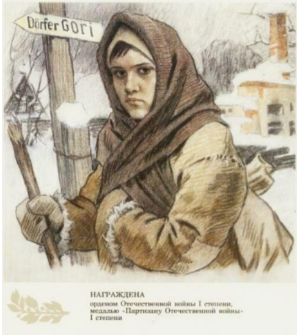
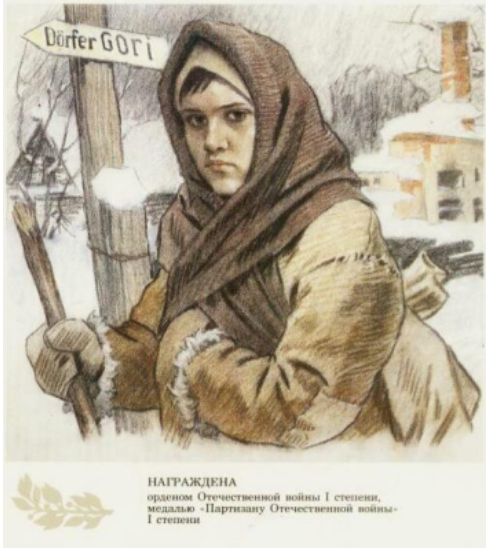

Имя героя
 

Нина Петровна Куковерова — пионер-герой, партизанка, разведчица Великой Отечественной войны, замучена и убита фашистами в декабре 1943 года.
Ранняя жизнь
Нина росла очень доброй и отзывчивой девочкой. Ее любознательность и усердие не могли не радовать родителей. В школе она успевала по всем предметам, была прилежной и аккуратной, читала книги о героях и их подвигах. В жизни ориентировалась на своего старшего брата Григория, который стал летчиком, и мечтала стать похожей на Марину Раскову или Полину Осипенко.
Деятельность во время блокады
В 1942 году всех членов семьи отправили в немецкий лагерь в город Гатчину, а через два месяца перевели в деревню Улитино Идрицкого района Великолукской области. Там девочка решила присоединиться к партизанам. Нина была определена во взвод разведки. Ходила по населённым пунктам, выпрашивала еду — под этой легендой вела разведывательную работу, расклеивала листовки. В конце 1943 года приняла участие в разгроме базы эсэсовцев в деревне Горы. По добытым ею сведениям была проведена успешная операция.
Наследие
Орден Отечественной войны I степени и медаль «Партизану Отечественной войны» I степени — посмертные награды Нины Куковеровой.